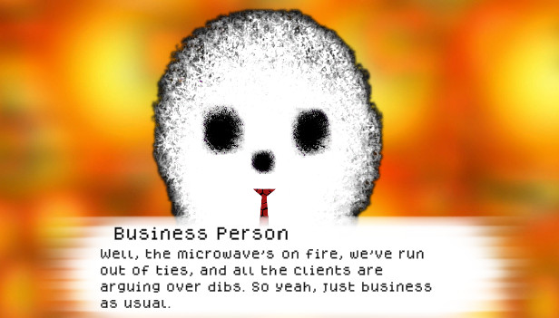
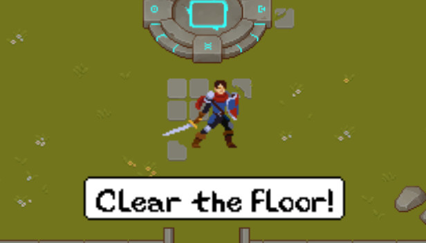

Projects:
About me:
I have an immense respect for the different mediums storytelling can manifest through. Ever since I was a child I was obsessed with telling stories through games, creating my own series of comics, and creating my own card games out of paper. Over the years I've practiced musical performance as well as composition in various genres, and even created interactive stories for my friends through D&D. Part of why I decided to come to RIT was to broaden my range of skills and find the medium with which I could be most satisfied with my own storytelling; and through the bachelor's GDD program I hope to reach, or come closer towards, this goal.
Unfinished Business

Struggling to make ends meet, you find yourself in the employ of an odd group of lingering spirits.
Join 'Unfinished Business' in their mission to free these lost souls; bound to this world by their
ties to the living.
Unfinished Business is a visual novel I built from the ground up as a solo developer. I had been
developing it specifically in the Unity engine as part of an effort to learn and familiarize myself with
the engine beyond my current classwork. Through it I gained valuable experience in time management and
how to better structure my work for future development. This game was created for the 2022 Spooktober
Halloween Game Jam.
Github:
https://github.com/docchub/Unfinished-Business
itch.io:
https://doccsoccs.itch.io/unfinished-business
Mournblade

Created a C# top-down roguelike in Visual Studio using the MonoGame framework in a team of 5.
Implemented file IO, basic gameplay elements, sprite animations, and debugged a majority of the game.
Struggled with balancing team workload and gained valuable experience, in terms of both communication as
a co-developer, and grew an appreciation for the responsibilities and contributions of any member of a
given team.
Github:
https://github.com/ZHerbold/gdaps2_2215_team_C
YouTube:
https://www.youtube.com/watch?v=4Iq3Al_S9oA